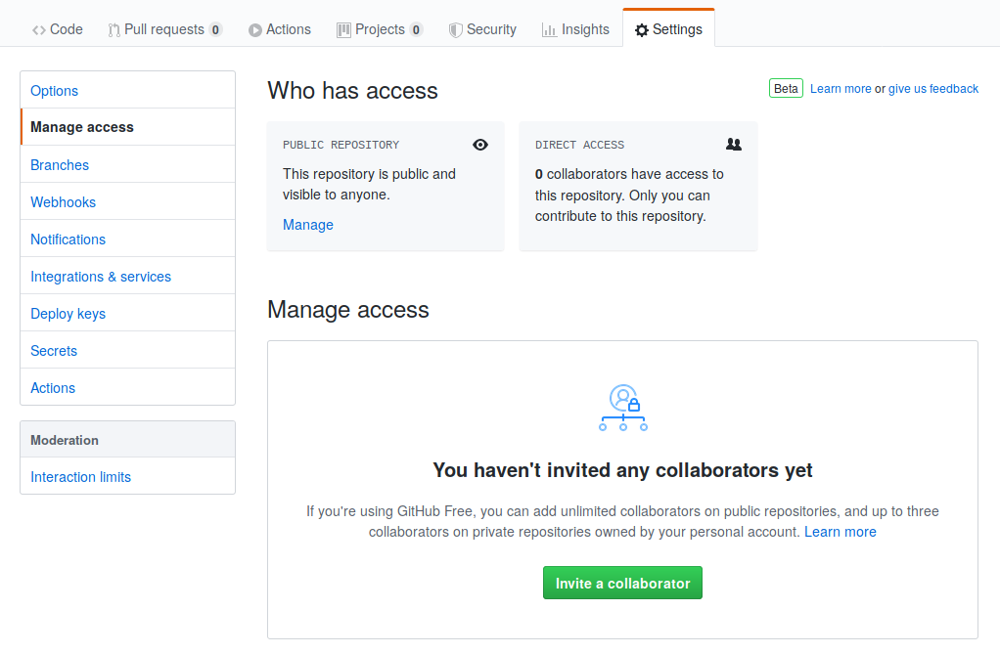

Collaborating
Overview
Teaching: 25 min
Exercises: 0 minQuestions
How can I use version control to collaborate with other people?
Objectives
Clone a remote repository.
Collaborate by pushing to a common repository.
Describe the basic collaborative workflow.
For the next step, get into pairs. One person will be the “Owner” and the other will be the “Collaborator”. The goal is that the Collaborator add changes into the Owner’s repository. We will switch roles at the end, so both persons will play Owner and Collaborator.
Practicing By Yourself
If you’re working through this lesson on your own, you can carry on by opening a second terminal window. This window will represent your partner, working on another computer. You won’t need to give anyone access on GitHub, because both ‘partners’ are you.
The Owner needs to give the Collaborator access. On GitHub, click the settings button on the right, select Manage access, click Invite a collaborator, and then enter your partner’s username.

To accept access to the Owner’s repo, the Collaborator needs to go to https://github.com/notifications. Once there she can accept access to the Owner’s repo.
Next, the Collaborator needs to download a copy of the Owner’s repository to her machine. This is called “cloning a repo”.
To clone the Owner’s repo into
her Desktop folder, the Collaborator enters:
$ git clone https://github.com/vlad/planets.git ~/Desktop/vlad-planets
Replace ‘vlad’ with the Owner’s username.
If you choose to clone without the clone path
(~/Desktop/vlad-planets) specified at the end,
you will clone inside your own planets folder!
Make sure to navigate to the Desktop folder first.

The Collaborator can now make a change in her clone of the Owner’s repository, exactly the same way as we’ve been doing before:
$ cd ~/Desktop/vlad-planets
$ nano pluto.txt
$ cat pluto.txt
It is so a planet!
$ git add pluto.txt
$ git commit -m "Add notes about Pluto"
1 file changed, 1 insertion(+)
create mode 100644 pluto.txt
Then push the change to the Owner’s repository on GitHub:
$ git push origin main
Enumerating objects: 4, done.
Counting objects: 4, done.
Delta compression using up to 4 threads.
Compressing objects: 100% (2/2), done.
Writing objects: 100% (3/3), 306 bytes, done.
Total 3 (delta 0), reused 0 (delta 0)
To https://github.com/vlad/planets.git
9272da5..29aba7c main -> main
Note that we didn’t have to create a remote called origin: Git uses this
name by default when we clone a repository. (This is why origin was a
sensible choice earlier when we were setting up remotes by hand.)
Take a look at the Owner’s repository on GitHub again, and you should be able to see the new commit made by the Collaborator. You may need to refresh your browser to see the new commit.
Some more about remotes
In this episode and the previous one, our local repository has had a single “remote”, called
origin. A remote is a copy of the repository that is hosted somewhere else, that we can push to and pull from, and there’s no reason that you have to work with only one. For example, on some large projects you might have your own copy in your own GitHub account (you’d probably call thisorigin) and also the main “upstream” project repository (let’s call thisupstreamfor the sake of examples). You would pull fromupstreamfrom time to time to get the latest updates that other people have committed.Remember that the name you give to a remote only exists locally. It’s an alias that you choose - whether
origin, orupstream, orfred- and not something intrinstic to the remote repository.The
git remotefamily of commands is used to set up and alter the remotes associated with a repository. Here are some of the most useful ones:
git remote -vlists all the remotes that are configured (we already used this in the last episode)git remote add [name] [url]is used to add a new remotegit remote remove [name]removes a remote. Note that it doesn’t affect the remote repository at all - it just removes the link to it from the local repo.git remote set-url [name] [newurl]changes the URL that is associated with the remote. This is useful if it has moved, e.g. to a different GitHub account, or from GitHub to a different hosting service. Or, if we made a typo when adding it!git remote rename [oldname] [newname]changes the local alias by which a remote is known - its name. For example, one could use this to changeupstreamtofred.
To download the Collaborator’s changes from GitHub, the Owner now enters:
$ git pull origin main
remote: Enumerating objects: 4, done.
remote: Counting objects: 100% (4/4), done.
remote: Compressing objects: 100% (2/2), done.
remote: Total 3 (delta 0), reused 3 (delta 0), pack-reused 0
Unpacking objects: 100% (3/3), done.
From https://github.com/vlad/planets
* branch main -> FETCH_HEAD
9272da5..29aba7c main -> origin/main
Updating 9272da5..29aba7c
Fast-forward
pluto.txt | 1 +
1 file changed, 1 insertion(+)
create mode 100644 pluto.txt
Now the three repositories (Owner’s local, Collaborator’s local, and Owner’s on GitHub) are back in sync.
A Basic Collaborative Workflow
In practice, it is good to be sure that you have an updated version of the repository you are collaborating on, so you should
git pullbefore making our changes. The basic collaborative workflow would be:
- update your local repo with
git pull origin main,- make your changes and stage them with
git add,- commit your changes with
git commit -m, and- upload the changes to GitHub with
git push origin mainIt is better to make many commits with smaller changes rather than of one commit with massive changes: small commits are easier to read and review.
Switch Roles and Repeat
Switch roles and repeat the whole process.
Review Changes
The Owner pushed commits to the repository without giving any information to the Collaborator. How can the Collaborator find out what has changed with command line? And on GitHub?
Solution
On the command line, the Collaborator can use
git fetch origin mainto get the remote changes into the local repository, but without merging them. Then by runninggit diff main origin/mainthe Collaborator will see the changes output in the terminal.On GitHub, the Collaborator can go to the repository and click on “commits” to view the most recent commits pushed to the repository.
Comment Changes in GitHub
The Collaborator has some questions about one line change made by the Owner and has some suggestions to propose.
With GitHub, it is possible to comment the diff of a commit. Over the line of code to comment, a blue comment icon appears to open a comment window.
The Collaborator posts its comments and suggestions using GitHub interface.
Version History, Backup, and Version Control
Some backup software can keep a history of the versions of your files. They also allows you to recover specific versions. How is this functionality different from version control? What are some of the benefits of using version control, Git and GitHub?
Key Points
git clonecopies a remote repository to create a local repository with a remote calledoriginautomatically set up.